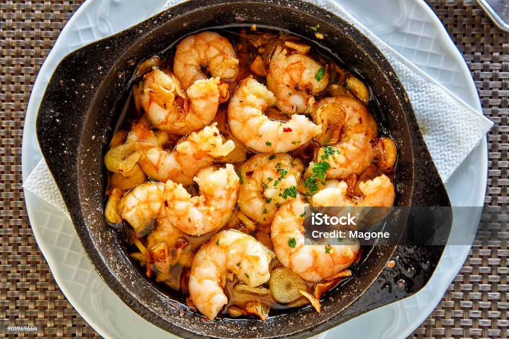

Creamy Garlic Butter Shrimp Scampi

Description
Bring the taste of a high-end coastal bistro to your kitchen with this Creamy Garlic Butter Shrimp Scampi. This dish is a masterclass in flavor, combining succulent, jumbo shrimp with a luxurious sauce made from melted butter, aromatic garlic, and a hint of white wine. A splash of heavy cream softens the sharp citrus notes, creating a velvety coating that clings perfectly to every strand of pasta. It’s a sophisticated meal that feels like a special occasion but comes together in less than twenty minutes.
The beauty of this recipe lies in its vibrant, fresh finish. A generous sprinkle of Italian parsley and a final squeeze of lemon juice brighten the savory garlic base, ensuring every forkful is balanced and refreshing. Whether you're hosting a dinner party or craving a gourmet weeknight escape, this shrimp scampi is a reliable showstopper that pairs beautifully with a chilled glass of Pinot Grigio and a side of crusty bread to soak up every last drop of sauce.
Ingredients
For the shrimp and pasta
- 1 lb Large shrimp (peeled and deveined)
- 8 oz Linguine or angel hair pasta
- 2 tbsp Olive oil
- Salt and red pepper flakes to taste
For the scampi sauce
- 4 tbsp Unsalted butter
- 4 cloves Garlic, minced
- 1/2 cup Dry white wine (or chicken broth)
- 1/4 cup Heavy cream
- 1 tbsp Fresh lemon juice
- 1 tsp Lemon zest
For the garnish
- 1/4 cup Fresh parsley, chopped
- 1/4 cup Grated Parmesan cheese
Steps
- Boil the Pasta: Bring a large pot of salted water to a boil. Cook the pasta according to package directions until al dente. Reserve about 1/2 cup of pasta water before draining.
- Sear the Shrimp: While the pasta cooks, heat olive oil in a large skillet over medium-high heat. Season the shrimp with salt and a pinch of red pepper flakes. Sear for about 1–2 minutes per side until pink and opaque. Remove the shrimp from the pan and set aside.
- Sauté Garlic: In the same skillet, melt the butter over medium heat. Add the minced garlic and cook for about 1 minute until fragrant, being careful not to let it brown.
- Deglaze and Reduce: Pour in the white wine (or broth). Let it simmer for 2–3 minutes until the liquid has reduced by half.
- Create the Creamy Sauce: Stir in the heavy cream, lemon juice, and lemon zest. Whisk gently and let the sauce simmer for another minute until it begins to thicken slightly.
- Toss Together: Add the cooked pasta and the seared shrimp back into the skillet. Toss thoroughly to coat everything in the sauce. If the sauce is too thick, add a splash of the reserved pasta water to reach your desired consistency.
- Finish and Serve: Remove from heat and stir in the fresh parsley and Parmesan cheese. Serve immediately with an extra wedge of lemon on the side.